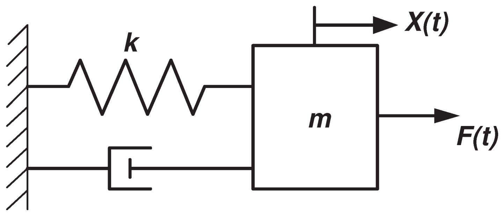
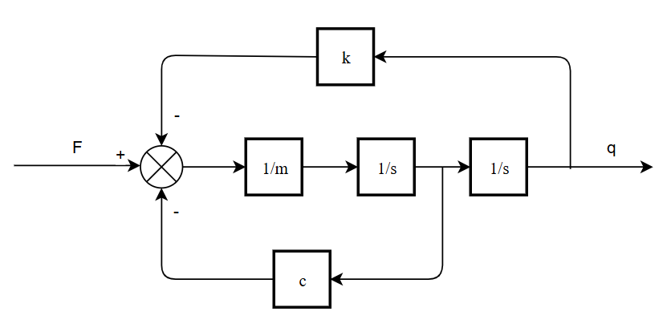
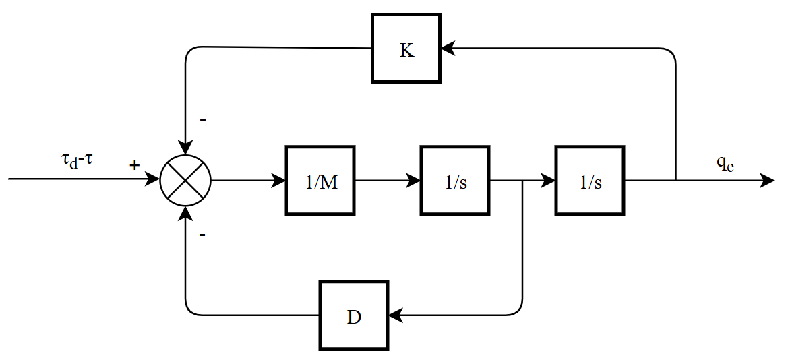
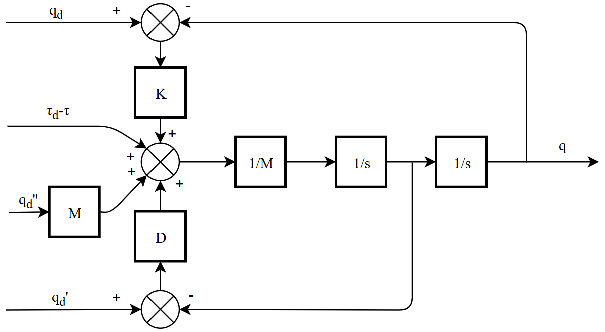
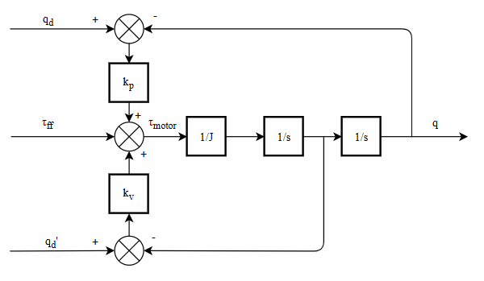
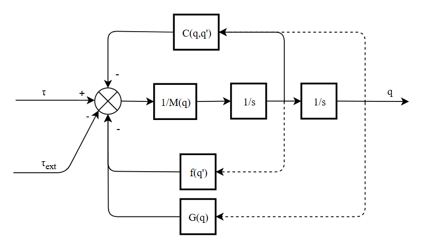
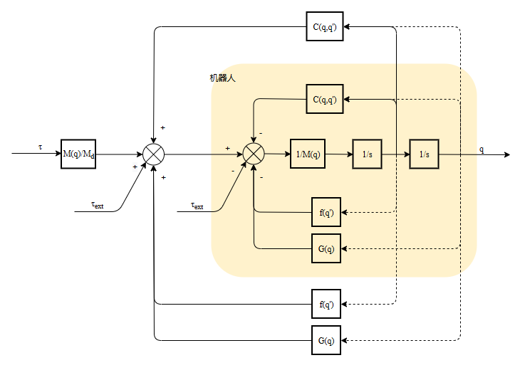
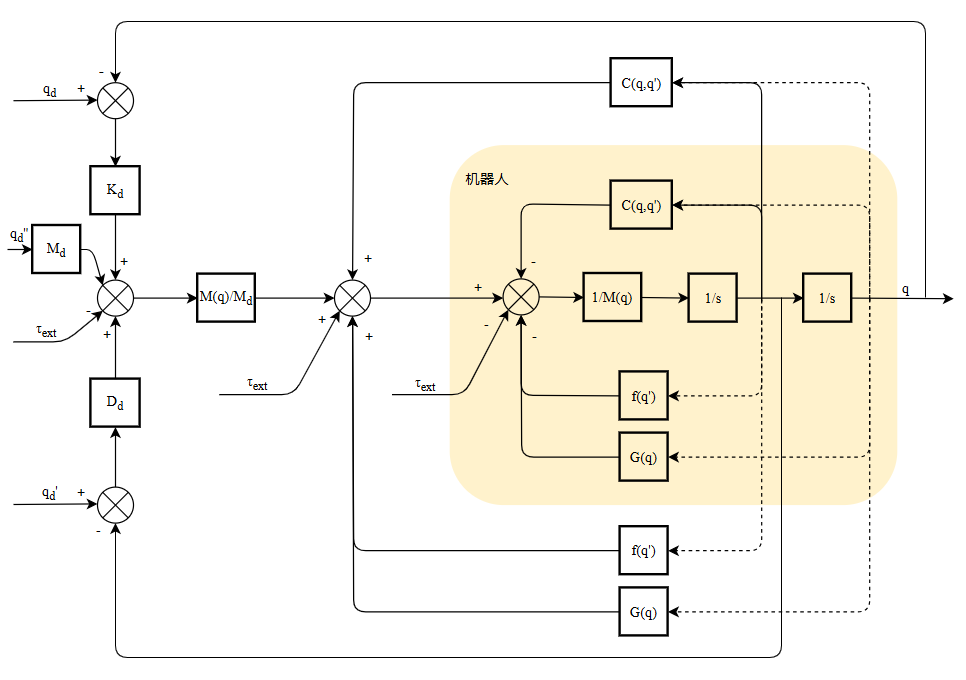
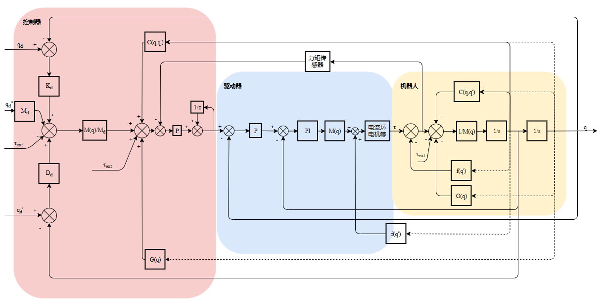
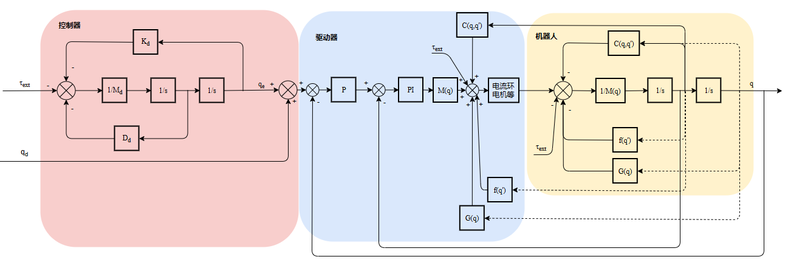

机器人上肢关节阻抗控制(最早)
1. 二阶系统
1.1 质量弹簧模型
质量弹簧阻尼模型是一个最简单的二阶系统，在外力F的作用下，质量块末端位移x(或q)表现为二阶系统，c为阻尼，k为弹性刚度。


该二阶系统的频率和阻尼比为：
1.2 阻抗控制

其中：
，表示位置偏差
表示期望力矩，在示教等场景下一般为0
质量块位移 既与外力 有关，又与目标位移 有关。
将 作为系统输入，框图可转化为：

1.3 PD控制器
机器人下肢驱动器采用的是PD控制，PD控制本质上也是阻抗控制。
PD控制的控制率为：

特别的，在时，对于位置指令和位置反馈：
也是二阶系统。
2. 机器人动力学
2.1 机器人动力学方程
机器人动力学方程为：
控制框图：

2.2 机器人动力学方程线性化
科氏力补偿，重力补偿，摩擦补偿。补偿为一个质量为 $$M_d
$$的等效质量块。

3. 机器人关节阻抗控制
3.1 将阻抗控制与机器人动力学结合

这样，在受到外力 时，位置偏差 表现得像一个质量弹簧阻尼模型。
3.2 在阻抗控制中驱动器

4. 机器人关节导纳控制
由1.3的第一张图可以得到：

目前问题
参考Franka机器人只有阻抗模式和纯力矩模式，没有纯位置模式，即下发给驱动器的指令均为力矩，不会下发位置。仿生臂二者都要做。位置模式转矩模式如何切换？只做位置环
力闭环在工控机还是在驱动器里面做？力闭环做在控制器全闭环如何做？第二编码器用途？全闭环控制
摩擦补偿在工控机还是在驱动器里面做？只补偿库伦摩擦和粘滞摩擦吗？摩擦力辨识？摩擦补偿要不要做？做在控制器伺服速度环的增益惯量M(q)是否实时修改，还是保持为定值？根据需求
转矩波动补偿计划做